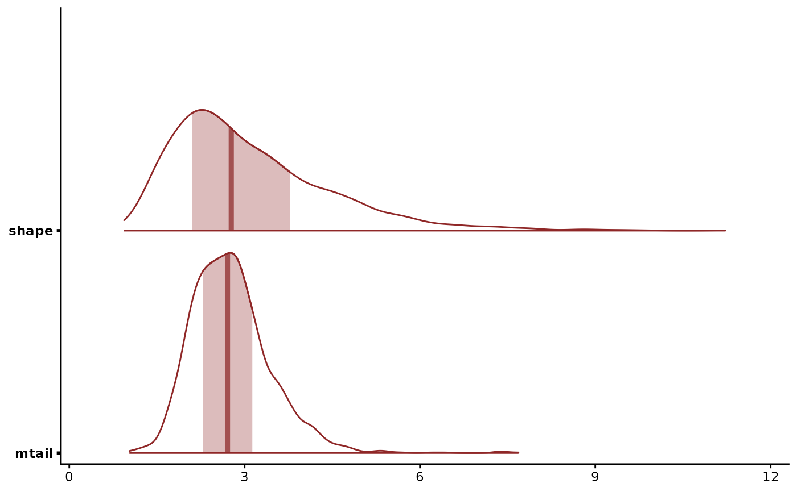

A three-parameter count family that mixes the negative binomial success probability over a Beta distribution. The tail follows a power law. It suits outbreak counts and boom-bust population series, where a negative binomial fits the bulk of the data but repeatedly underpredicts the largest observations.
Value
A customfamily object for use with mvgam().
Details
The family is parameterised with mu as the mean:
$$Y \mid p \sim \mathrm{NegBinomial}(r, p), \quad
p \sim \mathrm{Beta}(1 + \tau, \mu \tau / r)$$
where r is shape and \(\tau\) is mtail. Writing Stan's
native first Beta parameter as \(\alpha = 1 + \tau\) makes the
mean finite by construction. \(E[Y] = \mu\) requires
\(\alpha > 1\).
The variance is finite only when mtail exceeds 1. Below that value,
the family is heavy-tailed. This is the behaviour the
family exists to provide. It has two consequences worth knowing.
Randomised quantile residuals, the default in residuals.mvgam(),
are unaffected. They need only the distribution function. Moment-based
scoring is affected. score(..., score = "dss") assumes a finite
predictive variance. Avoid it when the posterior for mtail places
appreciable mass below 1. Prefer "crps", "drps" or "logs".
As mtail grows the family converges to the negative binomial with
the same shape. A posterior for mtail that runs off toward its
prior upper range is evidence that the extra tail parameter is not
needed.
Distributional parameters
muMean of the response, with a log link.
shapeNegative binomial shape
r, log link, positive. Default priorgamma(2, 0.5).mtailTail parameter \(\tau = \alpha - 1\), log link, positive. Smaller values give heavier tails; values below 1 give infinite variance. Default prior
gamma(2, 0.25).
Censoring and truncation
The Stan code supplies the distribution function as well as the
density. The cens() and trunc() addition terms work as they do
for the built-in count families.
Two limits are worth knowing. The distribution function accumulates the mass function term by term. Its cost and the length of the automatic-differentiation tape both grow linearly in the count at which it is evaluated. At the counts these models usually see this is unnoticeable. A censoring bound in the thousands dominates the gradient evaluation. One in the millions is impractical.
Right censoring also needs the upper tail, which is computed as
log1m_exp() of the distribution function. That subtraction loses
precision once the survival probability approaches the accumulated
rounding error, roughly when 1 - F(y) falls below y * 5e-16. A
censoring bound placed far into the tail of a light-tailed fit can
return a survival probability of zero. A small positive value is the
correct result there. Heavy-tailed fits, the purpose of this family,
keep 1 - F(y) large. They are unaffected.
References
Irwin, J. O. (1968). The generalized Waring distribution applied to accident theory. Journal of the Royal Statistical Society A, 131(2), 205-225. doi:10.2307/2343842
See also
brms::negbinomial(), which this family approaches as
mtail grows. tweedie() covers non-negative continuous responses
with a point mass at zero.
Other observation families:
categ(),
com_binomial(),
diri(),
multi(),
mvgam_families,
mvn(),
mvt(),
nmix(),
occ(),
tweedie()
Examples
# \dontrun{
# Counts drawn from the mixture in Details: a negative binomial
# whose success probability follows a Beta distribution. The tail
# is set by `mtail = 2`, the bulk by `shape = 3`.
set.seed(1)
n <- 300
dat <- data.frame(x = rnorm(n), time = seq_len(n))
mu <- exp(1 + 0.5 * dat$x)
p <- rbeta(n, 1 + 2, mu * 2 / 3)
dat$y <- rnbinom(n, size = 3, prob = p)
mod <- mvgam(y ~ x, data = dat, family = beta_nb(), chains = 2,
silent = 2)
# The posteriors recover `shape` and `mtail`. A negative binomial
# is the limit of a large `mtail`.
summary(mod)
#> Family: beta_nb
#> Links: mu = log; shape = log; mtail = log
#> Formula: y ~ x
#> Data: dat (Number of observations: 300)
#> Draws: 2 chains, each with iter = 2000; warmup = 1000; thin = 1;
#> total post-warmup draws = 2000
#>
#> == Observation Model ==
#> Regression Coefficients:
#> Estimate Est.Error l-95% CI u-95% CI Rhat Bulk_ESS Tail_ESS
#> Intercept 0.92 0.09 0.75 1.10 1.00 1379 1207
#> x 0.58 0.08 0.43 0.74 1.00 1552 1204
#>
#> Further Distributional Parameters:
#> Estimate Est.Error l-95% CI u-95% CI Rhat Bulk_ESS Tail_ESS
#> shape 3.09 1.36 1.36 6.48 1.00 1175 1050
#> mtail 2.77 0.69 1.71 4.26 1.00 1156 1295
#>
#> Draws were sampled using sampling(NUTS). For each parameter, Bulk_ESS
#> and Tail_ESS are effective sample size measures, and Rhat is the potential
#> scale reduction factor on split chains (at convergence, Rhat = 1).
#>
#> Next steps:
#> - `pp_check(fit)`: posterior predictive checks
#> - `forecast(fit, newdata = ...)`: out-of-sample forecasts
#> - `loo(fit)` / `loo_compare(...)`: model fit + comparison
#> - `conditional_effects(fit)`: covariate effects
#> Use `how_to_cite(fit)` for a methods paragraph and `methods_md(fit)` for its equations.
mcmc_plot(mod, variable = c("shape", "mtail"), type = "areas")

# }